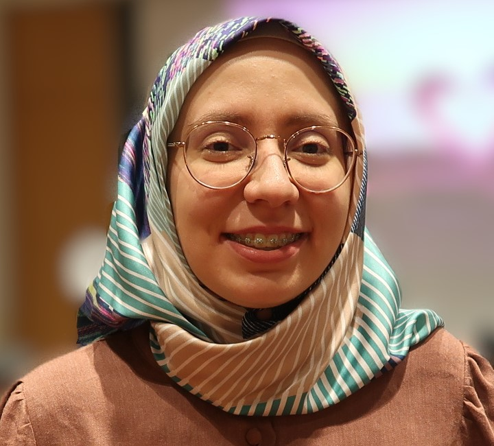
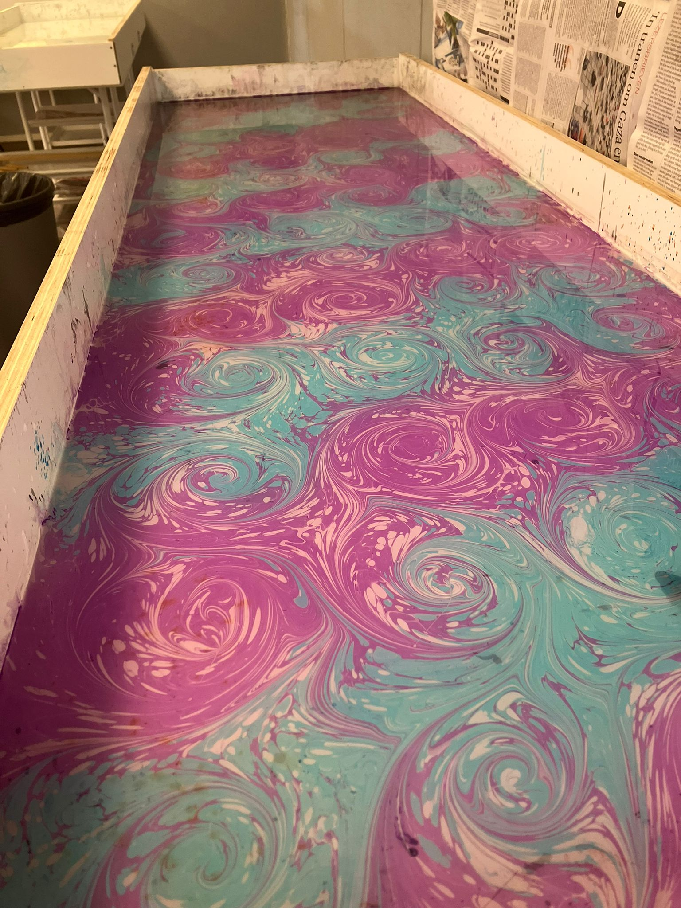
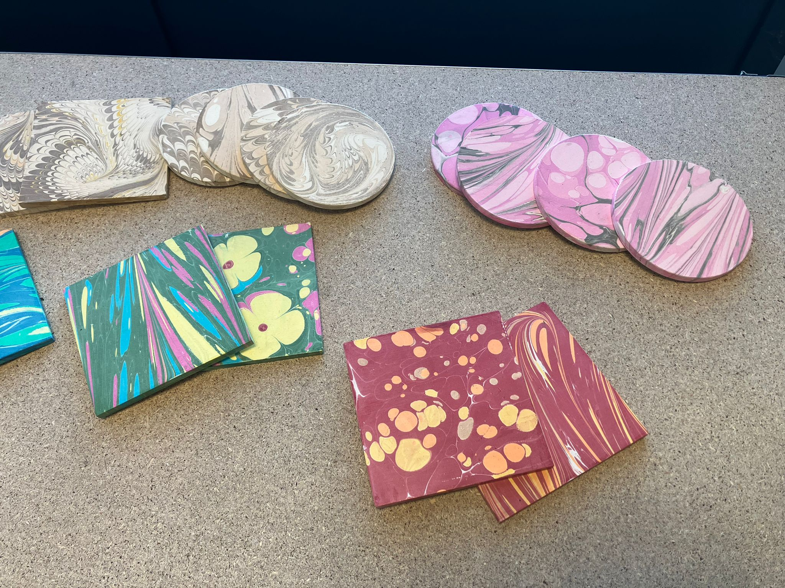

Hi and welcome to my webpage. I am Beyza, I grew up in Turkey and later lived in Belgium for 7 years. There I studied Engineering at KU Leuven with a specilization on Electronics and ICTs. Towards the end of my studies I decided I wanted to go into humanities so I applied to the philosophy department of my university.
As I was studying philosophy, I worked online as a project assistant at Respect Graduate School , a US institution that focuses on Islamic Theology. My various roles included working as editor in the production of a semi-academic journal: Kanz . After graduating I worked at an art workshop for a year, teaching the traditional Turkish artform Ebru(water/paper marbling).



As you might have gleaned by now, my professional journey spans a wide variety of areas. This is not due to a lack of decisiveness but rather a love of learning new things. It would be a dream to be sponsored like scholars of old, to study anything and everything under the heavens(and even those above in some cases). Alas, that is not the way of education currently, so I must find a way to sponsor myself.
So finally, I found my way to the Book and Digital Media Master of Leiden. I have always been interested in reading and writing. I find that the first traces of my passion towards books comes from the wide and varied library my journalist father had accumulated over the years. I wrote and published poems in Turkish from a young age and dreamed of being a novelist after my 40s. With this Masters I hope to get to know what goes into making a book behind the scenes. From the material production to marketing and beyond, what makes a book last? I hope I find new questions as well as answers. Thank you for reading this overly long introduction and stay curious!
| Prior Knowledge: | Coding experience, working with SQL, some line-editing and basic design |
| Expectations: | Understanding modern book production and its interaction with digital media. Gaining historical knowledge about the production and preservation of manuscripts and codices. |
It is hard to have a definitive list, but here are some of my favourite books: